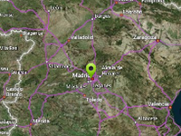

Example of storing of XML data in the marker.
Usage instructions:
Add this script to map GameObject.
Add this script to map GameObject.
MarkerCustomDataExample.cs
/* INFINITY CODE 2013-2016 */
/* http://www.infinity-code.com */
using UnityEngine;
namespace InfinityCode.OnlineMapsExamples
{
[AddComponentMenu("Infinity Code/Online Maps/Examples (API Usage)/MarkerCustomDataExample")]
public class MarkerCustomDataExample : MonoBehaviour
{
private void Start()
{
// Create a new markers.
OnlineMapsMarker marker1 = OnlineMaps.instance.AddMarker(Vector2.zero, "Marker 1");
OnlineMapsMarker marker2 = OnlineMaps.instance.AddMarker(new Vector2(10, 0), "Marker 2");
// Create new XML and store it in customData.
OnlineMapsXML xml1 = new OnlineMapsXML("MarkerData");
xml1.Create("ID", "marker1");
marker1.customData = xml1;
OnlineMapsXML xml2 = new OnlineMapsXML("MarkerData");
xml2.Create("ID", "marker2");
marker2.customData = xml2;
// Subscribe to click event.
marker1.OnClick += OnMarkerClick;
marker2.OnClick += OnMarkerClick;
}
private void OnMarkerClick(OnlineMapsMarkerBase marker)
{
// Try get XML from customData.
OnlineMapsXML xml = marker.customData as OnlineMapsXML;
if (xml == null)
{
Debug.Log("The marker does not contain XML.");
return;
}
// Show xml in console.
Debug.Log(xml.outerXml);
Debug.Log(xml.Get("ID"));
}
}
}